Docententeam Chemie · woensdag 4 november 2026
AI
aan het werk
Alles van vanmiddag op één plek: de stappen, de instructies, de documenten en je kaartje voor de volgende stap.
Reader2.1
Zie je dit blokje rechtsonder op een slide? Klik in het menu op hetzelfde nummer.
Start
1.1
Programma
| Tijd | Wat | Reader |
|---|---|---|
| 13:00 | Start en post-its | 1 |
| 13:15 | Drie uitkomsten en nu zelf | 2 |
| 13:35 | Ronde 1: bouwen | 3 |
| 13:55 | Laat zien | |
| 14:05 | Ronde 2: beter maken | 4 |
| 14:17 | Pauze | |
| 14:30 | Inspiratie | 5 |
| 14:44 | Ronde 3: je eigen werk | 6 |
| 15:22 | Laat zien | |
| 15:33 | Kaartje, top en tip | 7 |
| 16:00 | Borrel |
Om vier uur heb je drie dingen
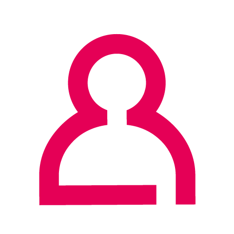
Een starthulp
Voor nieuwe studenten, op de documenten van je eigen opleiding. Door jezelf getest.
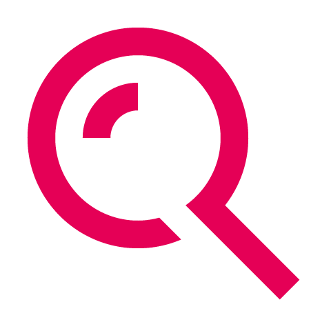
Het verschil gezien
Wat er verandert als je AI een instructie en de juiste documenten meegeeft.
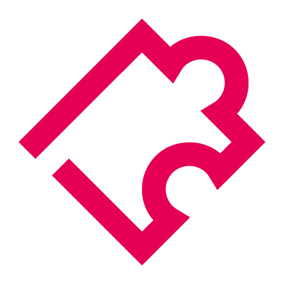
Je eigen werk
Een begin, voor een taak die steeds terugkomt. Met een collega en een datum.
1.2
Tools en afspraken
Werk vandaag in de tool die je hebt: Copilot, ChatGPT, Claude of Gemini. Geen eigen tool? Copilot met je HAN-account.
Twee afspraken
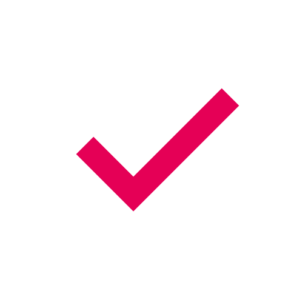
Jij blijft verantwoordelijk
Ook als AI het schreef.
Geen studentgegevens
Niet in je eigen account, niet in deze chats.
Dezelfde vraag, drie uitkomsten
Reader2.1
Wat moet een nieuwe student Chemie weten?
Wij stelden hem op drie manieren. Lees de drie uitkomsten en kies met je buur: welke geef je een nieuwe student? Waarom die, en niet de andere? En wat denk je dat er bij elke uitkomst gevraagd is?
De vraag
Wat moet een nieuwe student Chemie aan de HAN weten?
Uitkomst 1
Een nieuwe student Chemie aan de HAN (Hogeschool van Arnhem en Nijmegen) hoeft niet alles al te weten, maar er zijn een paar zaken die het verschil maken tussen een soepele start en een lastig eerste semester.
1. Wiskunde en rekenen zijn belangrijker dan veel studenten denken
Chemie bestaat niet alleen uit proefjes. Je gebruikt regelmatig:
- Concentratieberekeningen
- Mol- en massaomrekeningen
- Grafieken interpreteren
- Basisstatistiek
- Formules herschrijven
Een opfriscursus middelbare-schoolwiskunde (vooral procenten, machten, logaritmen en vergelijkingen) helpt enorm.
2. Veilig werken staat altijd voorop
Vanaf de eerste practica krijg je te maken met:
- Veiligheidsbrillen en labjassen
- Veiligheidsbladen (SDS/MSDS)
- Gevaarssymbolen (CLP/GHS)
- Afvalscheiding van chemicaliën
In het laboratorium geldt vaak: veiligheid gaat vóór snelheid en resultaat.
3. Practica vragen voorbereiding
Veel eerstejaars verwachten dat ze in het lab leren wat ze moeten doen. In werkelijkheid moet je vaak:
- Het practicum vooraf lezen
- Berekeningen vooraf maken
- Het doel van het experiment begrijpen
- Resultaten direct verwerken
Wie onvoorbereid verschijnt, loopt snel achter.
4. Verslaglegging is een groot onderdeel van de opleiding
Chemici experimenteren niet alleen; ze documenteren ook. Je schrijft:
- Prakticumverslagen
- Onderzoeksrapporten
- Literatuurstudies
- Presentaties
Goede communicatievaardigheden zijn net zo belangrijk als laboratoriumvaardigheden.
5. Je leert meer dan alleen scheikunde
Op de HAN komen ook onderwerpen voorbij zoals:
- Analytische chemie
- Organische chemie
- Fysische chemie
- Biochemie
- Procestechnologie
- Kwaliteitszorg
- Data-analyse
Daardoor kun je later verschillende kanten op.
6. Samenwerken hoort bij het vak
In de beroepspraktijk werk je vrijwel altijd in teams. Tijdens de opleiding krijg je daarom:
- Groepsprojecten
- Projectmatig werken
- Presentaties
- Opdrachten met bedrijven
Goede planning en communicatie zijn daarom belangrijk.
7. De arbeidsmarkt is gunstig
Afgestudeerden van Chemie vinden vaak werk bij:
- Analytische laboratoria
- Farmaceutische bedrijven
- Voedingsmiddelenindustrie
- Waterbedrijven
- Milieulaboratoria
- Materiaal- en kunststofbedrijven
In Oost-Nederland zijn bijvoorbeeld organisaties actief zoals Alliander, Vitens, Nouryon, Teijin Aramid, bovengenoemde laboratoria en diverse advies- en onderzoeksbureaus waar chemische kennis waardevol is.
8. Stage en praktijkervaring maken het verschil
Werkgevers kijken vaak naar:
- Stage-ervaring
- Praktijkvaardigheden
- Zelfstandig kunnen werken
- Nauwkeurigheid in het lab
Begin daarom vroeg met het opbouwen van een professioneel netwerk en een goed LinkedIn-profiel.
Tips voor je eerste 100 dagen
- Volg alle introductieactiviteiten.
- Maak vanaf week 1 samenvattingen.
- Zoek een vaste practicumgroep.
- Stel vragen in het lab.
- Houd je verslagen direct bij.
- Besteed extra aandacht aan rekenen en statistiek.
- Wacht niet tot vlak voor tentamens met leren.
Kort samengevat: een HAN-student Chemie die nieuwsgierig is, nauwkeurig werkt, veilig handelt en consequent zijn practica en verslagen voorbereidt, heeft meestal een uitstekende start van de opleiding.
Uitkomst 2
Starten met Chemie aan de HAN: praktisch overzicht voor eerstejaars (2026-2027)
Als nieuwe voltijdstudent Chemie aan de HAN volg je een vierjarige bachelor van 240 EC in het eigen ATBC-gebouw aan de Laan van Scheut 2 in Nijmegen, met vanaf dag één veel labwerk. Het belangrijkste nieuws voor jouw jaar: Chemie geeft sinds september 2026 geen bindend studieadvies meer, maar een niet-bindend persoonlijk studieadvies (PSA) met een doorstroomnorm naar jaar 2.
TL;DR
Opbouw: het eerste halfjaar start je samen met Biologie en Medisch Laboratoriumonderzoek, daarna gaat het volledig over chemie. In jaar 3 kies je analytische chemie of organische en polymeerchemie. Jaar 3 en 4 bevatten een stage en een minor (elk een halfjaar, volgorde zelf te kiezen) en een afstudeeropdracht van een halfjaar.
Studieadvies: het HAN-nieuwsbericht “HAN schaft het BSA af” zet Chemie (voltijd en deeltijd) op de lijst van opleidingen die al in september 2026 met het PSA zijn gestart, een jaar voor de HAN-brede invoering in 2027-2028. Het advies is niet bindend. Je mag wel pas met de vakken van jaar 2 beginnen als je de doorstroomnorm haalt. Volgens de HAN-propedeusepagina is dat HAN-breed “minimaal 30 tot 45 studiepunten van het 1e jaar”. De Chemie-pagina “Dit is je studie” noemt minimaal 45 EC. De exacte norm staat in de OS-OER.
Direct regelen: een laptop (Windows aanbevolen, geen Chromebook of tablet), een labkit uit de CampusStore en de verplichte LabArchives-licentie voor het elektronische labjournaal. Raak ook wegwijs in Insite, OSIRIS, MyX en Brightspace. Met vragen ga je eerst naar je studieloopbaanbegeleider.
Key Findings
De voltijdopleiding duurt 4 jaar. Met een goed aansluitend vwo- of mbo-diploma kan het soms in 3 jaar: je stroomt dan in jaar 2 in en krijgt vrijstelling voor de propedeuse als je jaar 2 goed afrondt.
Volgens de Chemie-pagina “Dit is je studie” heb je in jaar 1 “ongeveer 12 uur theorie en 8 uur praktijk” en “ongeveer 20 uur” zelfstudie per week. Een EC staat voor 28 studiebelastingsuren, dus een studiejaar van 60 EC komt neer op 1680 uur.
Bij de meeste HAN-opleidingen krijg je studiepunten per blok: pas als alle onderdelen van een blok gehaald zijn, worden de punten toegekend. Herkansen kan.
Veiligheid is een apart vak in jaar 1. De opleidingspagina Chemie voltijd noemt het expliciet als leerdoel: “Je leert hoe je veilig werkt met gevaarlijke stoffen.”
De Engelstalige variant Chemistry heeft dezelfde inhoud. Chemie zelf wordt in het Nederlands gegeven.
De studievereniging voor Chemie is SV ‘t Reactievat, die ook de introductie organiseert.
Details
1. Opbouw en inhoud van de opleiding
Propedeuse (jaar 1). De eerste zes maanden studeer je samen met studenten Biologie en Medisch Laboratoriumonderzoek (BML); de programma’s zijn in die periode gelijk. De tweede helft gaat volledig over chemie: een theoretische basis in analytische en organische chemie, en daarnaast polymeerchemie.
De HAN noemt voor jaar 1 onder meer:
- practica en laboratoriumpraktijk
- wiskunde/labrekenen en natuurkunde
- veiligheid
- workshop Excel en sociale vaardigheden
- histologische kleuringen, (micro)biologie, moleculaire technieken, microscopie en biochemische technieken
- atoom- en molecuulopbouw, workshop reactiemechanismen en thermodynamica
Je werkt in groepjes aan (bijna) realistische biomedische en chemische vraagstukken.
Hoofdfase (jaar 2). Je verdiept de theoretische basis en doet veel onderzoek in groepjes en projecten. Voorbeelden zijn het maken van bioplastics, of een organische reactie bestuderen en het reactiemengsel analyseren. Aan het eind van jaar 2 ken je alle aspecten van het vak analist globaal.
Specialisatie (begin jaar 3). Je kiest tussen:
- Analytische chemie: kwalitatieve en kwantitatieve analyse, bijvoorbeeld van schadelijke stoffen, bodemmonsters, voedingsstoffen of forensische monsters.
- Organische en polymeerchemie: (synthetische) organische chemie, vaak voor de farmaceutische sector, of polymeerchemie (lijmen, kitten, coatings, plastics, vezels).
Projecten in jaar 3 vinden vaak plaats bij of in opdracht van bedrijven.
Stage, minor en afstuderen (jaar 3 en 4). In jaar 3 en de eerste helft van jaar 4 doe je een stage en een minor van elk een halfjaar, in een volgorde die je zelf kiest. De HAN onderscheidt verdiepende, verbredende en doorstroomminoren. Als voorbeelden noemt de opleiding onder meer datatechnologie, biobased innovations, drug discovery en bio-nanotechnologie. Het laatste halfjaar staat in het teken van de afstudeeropdracht: zelfstandig onderzoek in het laboratorium van een bedrijf of instituut, eventueel in het buitenland. Je ontvangt de graad Bachelor of Science met een Engelstalig diplomasupplement.
Extra uitdaging: Analytical Sciences Talent Program (ASTP). Getalenteerde studenten kunnen in de propedeuse solliciteren voor dit Engelstalige programma van 3 jaar. Volgens TI-COAST wordt het georganiseerd door de HAN, Hogeschool Utrecht, Hogeschool Inholland en TI-COAST, en hoort het bij de talentprogramma’s van ChemistryNL. Volgens de HAN:
- zijn er jaarlijks 25 plaatsen;
- sluit de sollicitatie op 31 mei;
- volg je het programma vanaf je tweede jaar naast het reguliere curriculum, op zaterdagen en in vakanties (ongeveer 100 extra collegeuren per jaar).
De Engelstalige HAN-pagina noemt daarbij de ChemistryNL Student Grant van € 1.200 tot € 5.000 per jaar. Deze data en bedragen kunnen per jaar verschillen; controleer ze in jouw propedeusejaar.
2. Toetsing en studieadvies (BSA wordt PSA)
De HAN schaft het bindend studieadvies af. Volgens het HAN-nieuwsbericht “HAN schaft het BSA af” geldt het PSA vanaf 2027-2028 voor alle bachelors en Ad’s. “Een groot deel van de opleidingen start hier zelfs al mee in september 2026”, en Chemie (voltijd en deeltijd) en Chemistry staan op die lijst. Voor jou betekent dat:
- Je studiebegeleider bespreekt in jaar 1 minimaal 3 keer met je hoe het gaat. In het laatste gesprek krijg je het PSA.
- Het advies kijkt niet alleen naar studiepunten, maar ook naar motivatie, betrokkenheid, inzet, houding, aanwezigheid, geschiktheid en persoonlijke omstandigheden.
- Het advies is niet bindend: jij beslist of je doorgaat.
- Wel geldt een doorstroomnorm: pas als je die haalt, mag je beginnen met de vakken van jaar 2. Volgens de HAN-pagina “Je hbo propedeuse: studiepunten en studieadvies” is dat HAN-breed “minimaal 30 tot 45 studiepunten van het 1e jaar”, soms aangevuld met specifieke tentamens. Het exacte aantal voor Chemie staat in het opleidingsstatuut (OS-OER). De Chemie-pagina “Dit is je studie” stelt: “Voor de opleiding Chemie moet je aan het einde van het 1e jaar minimaal 45 studiepunten/EC’s hebben gehaald.”
- Haal je de norm niet, dan blijf je ingeschreven maar loop je vertraging op. Soms mag je al enkele vakken van jaar 2 volgen.
Let op twee bronnenconflicten:
- Studiekeuze123 vermeldt voor HAN Chemie nog een bindend studieadvies van 45 EC. Dat is achterhaald ten opzichte van de informatie van de HAN zelf.
- Op de praktische-infopagina staat dat het gelinkte opleidingsstatuut dat van 2025-2026 is. Het OS-OER wordt elk jaar opnieuw vastgesteld. Controleer dus de versie 2026-2027 (via “Praktische info” op de opleidingspagina) voor de exacte doorstroomnorm, eventuele verplichte onderdelen en aanwezigheidsregels bij practica.
In oudere Chemie-OER’s (2019-2020 en 2021-2022) was aanwezigheid bij praktijklessen verplicht, en leidde onvoldoende aanwezigheid tot een praktijkbeoordeling van 0,0. Reken erop dat practica ook nu aanwezigheid vereisen, maar controleer de huidige regel.
3. Practica en laboratoriumveiligheid
- Labwerk: je staat vanaf het begin in het lab. De Engelstalige HAN-pagina Bachelor Chemistry zegt: “You also work 1 whole day a week in the lab.”
- Labkit: verplicht voor practica en te koop in de CampusStore. Op de eerste lesdag kun je hem aanschaffen. De HAN publiceert niet wat er in de labkit zit.
- Labjas en veiligheidsbril: in een HAN-flyer uit 2022 voor nieuwe BML-studenten (dezelfde academie en hetzelfde gebouw) stond: “Voor de praktijklessen in het laboratorium is een labjas verplicht.” De sectorbrede Arbocatalogus hbo schrijft labjas en bril voor bij werken met ontvlambare, giftige, irriterende of oxiderende stoffen, en in zwaardere zones ongeacht de werkzaamheden. Een actuele HAN-specifieke regeling heb ik niet gevonden. Ga ervan uit dat je in het chemielab altijd labjas en veiligheidsbril draagt, en volg de instructies van docenten en labpersoneel.
- Veiligheidsinstructie: veiligheid is een vak in jaar 1, en in oudere OER’s zat een “Kennistoets Veiligheid” in de eerste onderwijseenheid. Of er in 2026-2027 een aparte verplichte toets is voordat je het lab in mag, staat niet in openbare HAN-bronnen. Vraag het na bij je studieloopbaanbegeleider of zoek het op in de studiehandleiding op Brightspace.
- LabArchives: een account met HAN-licentie voor dit elektronische labjournaal is verplicht voor Chemiestudenten. Je koopt de licentie via de HAN-webshop.
4. Materialen en kosten (eerste jaar, indicatief volgens de HAN)
- Collegegeld: bereken via de HAN-collegegeldpagina (verschilt per persoon en jaar)
- Laptop: € 500 tot € 1.000
- Introductie: € 100
- Boeken jaar 1: ongeveer € 400, plus maximaal € 50 voor de labkit
- LabArchives-licentie: € 50
- Stage: mogelijk reis- en verblijfkosten, afhankelijk van de stageplek
Boeken: de boekenlijst “Chemie Jaar 1” staat op Studiewinkel.nl. Je kunt ook tweedehands kopen of lenen in de HAN-bibliotheek. Readers krijg je digitaal tijdens het jaar.
Laptop:
- Windows 10 of 11 heeft de voorkeur (advies: Windows 11, maximaal 14 inch, niet ouder dan 3 jaar), met een HDMI-aansluiting of adapter.
- Chromebooks en tablets zijn niet geschikt.
- Je gebruikt Microsoft 365 (gratis via de HAN) en maakt sommige toetsen digitaal op je eigen laptop (Bring Your Own Device).
- Met een MacBook heb je voor minstens één Windows-only applicatie een Windows-omgeving nodig, op eigen kosten.
- Kun je geen laptop aanschaffen, dan kun je voor toetsen een leenlaptop gebruiken.
Rekenmachine: ik vond geen HAN-voorschrift voor een specifiek model voor Chemie. Vraag bij je eerste toetsen na welke rekenmachine is toegestaan.
5. Locatie en faciliteiten
- Gebouw: Laan van Scheut 2, 6525 EM Nijmegen, onderdeel van de HAN Campus bij station Nijmegen Heyendaal. Daar zijn broodjes en soep te koop. Voor een warme maaltijd of de pub ga je naar Kapittelweg 33 of 35.
- CampusStore: Kapittelweg 33, ruimte D0.40 (readers, kantoorartikelen, labkit).
- Bibliotheek: HAN Bibliotheek Nijmegen op Kapittelweg 33 (eerste en tweede verdieping). De balie is op werkdagen open van 08:30 tot 17:00, en op maandag, dinsdag en donderdag ook van 17:30 tot 20:00. Selfservice-uitleen en studiewerkplekken zijn toegankelijk zolang het gebouw open is. Lenen gaat met je HANcard; de standaardtermijn is 4 weken. In vakanties gelden andere openingstijden.
6. Digitale omgeving
- HANaccount: inloggen op alle voorzieningen; activeren door je tijdelijke wachtwoord te wijzigen
- HANmail / Microsoft 365: mail, agenda, Teams, Office
- HAN Insite: intranet: regelingen, geldzaken, herinschrijven, jaarrooster, hulp
- OSIRIS: cijfers en studiepunten, inschrijven voor tentamens, afspraken met begeleiders
- MyX (My Xedule): lesrooster
- Brightspace: lesvoorbereiding, opdrachten inleveren, feedback
- LabArchives: elektronisch labjournaal (verplicht)
- Wifi: via de geteduroam-app met je HANaccount
- HANcard: nodig bij tentamens, printen, lenen en parkeren
“Onderwijs Online Nijmegen” is geen HAN-systeem; de leeromgeving van de HAN is Brightspace.
7. Studiebegeleiding
- Studieloopbaanbegeleider (slb’er): je persoonlijke coach en eerste aanspreekpunt. Volgens de opleiding zie je elkaar in jaar 1 wekelijks; daarna bepaal je zelf hoeveel begeleiding je wilt. De slb’er geeft ook het PSA.
- Studieadviseur: regelt zaken zoals speciale tentamenvoorzieningen of een aangepast studieplan bij bijzondere omstandigheden.
- Student Support Center: studentendecanen, bijvoorbeeld bij een functiebeperking, ziekte, topsport of financiële vragen; studentenpsychologen, vertrouwenspersonen en coaches; trainingen en workshops, zoals plannen en omgaan met studiestress. Meer informatie staat op Insite.
Speelt er iets dat je studievoortgang raakt, meld het dan vroeg. Bij bijzondere omstandigheden is vaak meer mogelijk dan je denkt.
8. Studie- en studentenverenigingen
SV ‘t Reactievat is de studievereniging van de Academie Toegepaste Biowetenschappen en Chemie (Chemie, Chemistry, BML, Bio-informatica, Life Sciences). De vereniging is gevestigd aan de Laan van Scheut 2, opgericht in 1992 en wordt door studenten gerund. Ze organiseert onder meer bijlessen, masterclasses, lezingen, bedrijfsbezoeken, studiereizen, borrels en de introductie.
Studentenverenigingen in Nijmegen: de HAN verwijst onder meer naar:
- gezelligheids-, levensbeschouwelijke en internationale verenigingen, zoals AEGEE-Nijmegen en ESN Nijmegen;
- de koepel B.O.S.;
- een lange lijst studentensportverenigingen.
Studentenvakbond AKKU behartigt de belangen van HAN- en Radboud-studenten.
9. Beroepsperspectief en doorstuderen
Werkvelden: laboratoria in de levensmiddelenindustrie, (petro)chemie, polymeerindustrie, farmacie, ziekenhuizen en onderzoeksinstituten. De HAN noemt functies als chemisch-fysisch analist, chemicus in de polymeerindustrie, onderzoeker en organisch synthetisch chemicus.
Arbeidsmarkt: twee uitspraken van de HAN zijn wervingsteksten zonder bronvermelding: dat de vraag naar chemisch analisten groter is dan het aanbod, en dat een scheikundige gemiddeld € 3.000 bruto per maand verdient. Volgens Studiekeuze123 vond 84% van de afgestudeerden van HAN Chemie een baan binnen het vakgebied, en 81% een baan op het niveau van de studie.
Doorstuderen: de HAN noemt:
- de master Molecular Sciences aan de Radboud Universiteit;
- de master Chemistry: Analytical Sciences aan de Universiteit van Amsterdam;
- de eigen HAN-master Applied Molecular Sciences, track Chemistry (Engelstalig, 2 jaar, theorie gecombineerd met leren op een stageplek, ook in deeltijd).
Voor universitaire masters is vaak een premaster of doorstroomminor nodig; plan dat in jaar 3. Wil je lesgeven, dan kun je via de kopopleiding Leraar Scheikunde in 1 jaar een tweedegraads bevoegdheid halen.
Recommendations
- Lees deze week het OS-OER 2026-2027 van Chemie (via “Praktische info” op de opleidingspagina). Noteer de doorstroomnorm, eventuele verplichte onderdelen en de aanwezigheidsregels voor practica. Nu, begin november, ligt het eerste blok achter je: check in OSIRIS hoeveel EC je hebt en of er onderdelen openstaan.
- Behandel het PSA niet als vrijbrief. Het advies is niet bindend, maar zonder de doorstroomnorm kun je niet aan jaar 2 beginnen. Omdat punten per blok worden toegekend, kan één gemist onderdeel een heel blok blokkeren. Plan herkansingen direct.
- Neem labveiligheid vanaf dag één serieus: labjas dicht, bril op, en de instructies uit het vak Veiligheid toepassen. Vraag bij twijfel je docent of er een verplichte veiligheidstoets of instructie is voor specifieke practica.
- Zorg dat je laptop klaar is voor digitale toetsen, met Windows-software en Microsoft 365, en dat je LabArchives-account actief is.
- Bouw vroeg je netwerk: word lid van ‘t Reactievat. Vind je analytische chemie leuk, overweeg dan een sollicitatie voor het ASTP voor de deadline in je propedeusejaar.
- Zoek op tijd hulp: eerst bij je slb’er, daarna bij het Student Support Center.
Caveats
- Veel informatie verandert per studiejaar: OS-OER, doorstroomnorm, vakkenlijst, kosten, ASTP-data en minoraanbod. Spreken bronnen elkaar tegen, dan gaat het OS-OER van jouw studiejaar voor op websites.
- Ik kon de volledige tekst van het actuele OS-OER niet inzien. De cursuscodes, de EC per onderwijseenheid en de exacte doorstroomnorm voor 2026-2027 staan daarom niet in dit overzicht.
- Ik vond geen actuele, openbare HAN-regeling over een verplichte labjas en bril, de inhoud van de labkit of een verplichte veiligheidstoets. De adviezen hierover zijn gebaseerd op een oudere HAN-flyer, de Arbocatalogus hbo en algemene labpraktijk.
- De kosten zijn schattingen van de HAN zelf, geen vaste prijzen. Het collegegeld staat er bewust niet in, omdat het per persoon en jaar verschilt.
- Cijfers van Studiekeuze123 (zoals de vermelding van een BSA) lopen soms achter op besluiten van de HAN.
Uitkomst 3
Als nieuwe student van de opleiding Chemie aan de HAN zijn dit de belangrijkste zaken om te weten en te regelen.
Voor je start
1. Meld je op tijd aan
- Aanmelden gaat via Studielink.
- Het advies is om je uiterlijk 1 mei aan te melden.
- Voor de opleiding Chemie geldt geen selectie of loting.
2. Controleer of je toelaatbaar bent
Je bent rechtstreeks toelaatbaar met:
- een havo-, vwo- of mbo-4-diploma dat voldoet aan de profiel- en vakkenpakketeisen;
- voor havo/vwo zijn meestal scheikunde en soms ook wiskunde vereist.
3. Doe een matchingsactiviteit
De HAN biedt proefstudeerdagen en matching aan om te ontdekken of Chemie bij je past. Dit is niet verplicht, maar wel sterk aanbevolen.
Wat moet je regelen?
Vanaf mei
- Machtiging voor betaling van het collegegeld afgeven via Studielink.
- Eventueel studiefinanciering aanvragen.
Vanaf juni
- Studieboeken bestellen.
- Controleren of je laptop geschikt is.
- Een labkit aanschaffen voor practica.
- Een licentie voor LabArchives (elektronisch labjournaal) regelen.
Vanaf juli
- Controleren of je inschrijving definitief is.
- Je HAN-account activeren.
- Office 365 installeren.
- Je HAN-mail gebruiken.
- Wifi en andere HAN-systemen instellen.
- Een pasfoto uploaden voor je HANcard.
Laptopvereisten
De opleiding werkt intensief met digitale systemen.
Aanbevolen:
- Windows 11-laptop;
- maximaal 14 inch;
- niet ouder dan 3 jaar.
Daarnaast:
- Microsoft 365 wordt actief gebruikt;
- Chromebook of tablet is onvoldoende;
- een HDMI-aansluiting (of adapter) is nodig;
- Mac-gebruikers moeten rekening houden met software die alleen onder Windows werkt.
Introductie en eerste lesdag
- De introductieweek vindt plaats van 24 t/m 28 augustus 2026.
- Deelname is niet verplicht, maar wordt sterk aanbevolen.
- Op 24 augustus ontvang je meestal je klasindeling en rooster.
- De eerste lesdag is 1 september om 09:00 uur.
Belangrijke systemen
Tijdens je studie gebruik je onder andere:
- HAN Insite: algemene informatie en regelzaken
- Osiris: cijfers, tentamens en studievoortgang
- MyX: rooster
- Brightspace: onderwijsmateriaal en opdrachten
- LabArchives: digitaal labjournaal
Studiekosten eerste jaar
Reken ongeveer op:
- collegegeld;
- boeken: circa €400;
- labkit: maximaal €50;
- LabArchives-licentie: circa €50;
- introductie: ongeveer €100;
- eventueel een laptop (€500-€1.000).
Waar studeer je?
De opleiding Chemie is gevestigd op: Laan van Scheut 2, Nijmegen.
Mijn belangrijkste advies aan nieuwe studenten
- Meld je vóór 1 mei aan.
- Doe een proefstudeerdag of matching.
- Regel je HAN-account direct zodra je de gegevens ontvangt.
- Zorg dat je laptop en software vóór de introductieweek werken.
- Doe mee aan de introductie om snel medestudenten te leren kennen.
- Word lid van studievereniging 't Reactievat voor sociale activiteiten, bijlessen en netwerkmogelijkheden.
Bronnen: A1-inschrijvingsreglement-2026-2027-ATBC en A5-webpagina-praktische-info-chemie.
Wat er bij elke uitkomst gevraagd was pas openen na het gesprek
- Eén zin, in een gewone chat
In Copilot. De AI zocht zelf op het web.
- Dezelfde zin, met een diepere zoekfunctie
In Claude, met Research aan. Grondig en met bronnen, maar lang en van overal vandaan.
- Onze documenten plus een korte uitleg
In een Copilot-notebook, met de drie documenten en de startinstructie (bij 3.4): voor wie, wat moet hij doen, alleen uit deze documenten, kort, met de bron, en verzin niets.
Reader2.2
Nu zelf, voor je eigen rol
Doe het
Nieuwe chat in je tool. Zet de documenten erbij. Vraag wat jij als docent wilt weten over de start van je studenten.
Kijk ernaar
Vind je het goed? Wat zou je anders vragen? Mis je een document?
Zo zet je de documenten erbij: download de drie PDF's hieronder en sleep ze in het invoerveld van je chat, of klik op het plusje of paperclipje ernaast.
De documenten
- Inschrijvingsreglement 2026-2027 ATBC
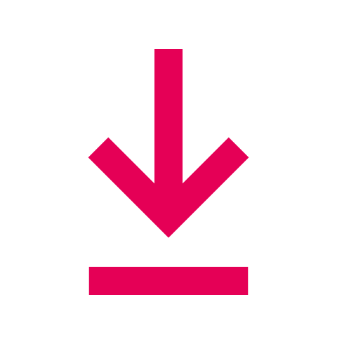
PDF - Webpagina Praktische info ChemiePDF
- Webpagina Dit is je studie ChemiePDF
2.3
Wat je vraagt, welk model je gebruikt en wat je meegeeft
Prompt
Eén zin, of: voor wie, wat en hoe.
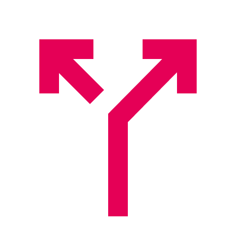
Model
Gewone chat, of een diepere zoekfunctie.
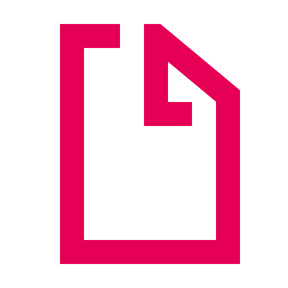
Context
Niets, het web, of jouw documenten.
Aan alle drie kun je draaien.
Licht of zwaar model
Bij model kun je ook kiezen tussen een licht en een zwaar model. Een licht model is snel en prima voor een mail. Een zwaar model denkt langer na en is beter bij lastige vragen. In de gratis Copilot kies je dat niet zelf, in Claude en ChatGPT wel, in het menu bij het invoerveld.
Die weet niets van jullie, tot je hem de documenten geeft en uitlegt hoe jullie het doen. In ronde 1 schrijf je die uitleg één keer, en hij blijft staan.
Ronde 1: bouw je starthulp
Je bouwt een hulp voor een nieuwe student Chemie, op de drie documenten van de opleiding. Tot 13:55.
Reader3.1
Drie tips
- Praat in plaats van typenWindows+H
Klik in het invoerveld, druk de toetsen in en praat.
- Vast? Maak een screenshotWindows+Shift+S
Plak hem in de chat en vraag: ik ben hier, wat moet ik doen?
- Geen idee wat je moet vragen?
Laat de AI eerst drie vragen aan jou stellen. Kopieer deze prompt naar een nieuwe chat.
Laat de AI eerst vragen stellen
Ik wil AI gebruiken voor een taak in mijn werk als docent, maar ik weet nog niet goed wat ik moet vragen. Stel me eerst drie vragen, één voor één. Wacht na elke vraag op mijn antwoord. Vraag naar: 1. wat ik wil maken of laten doen; 2. voor wie het is; 3. welke informatie of documenten ik heb. Schrijf daarna een instructie die ik in een nieuwe chat kan plakken.
3.2
Schrijf je instructie: vijf vragen
- Voor wie is hij?
Een nieuwe student Chemie, in de eerste week
- Wat moet hij doen?
Vragen beantwoorden over de start van de studie
- Waarmee?
Alleen deze documenten
- Hoe ziet het antwoord eruit?
Kort, in gewone taal, eerst het antwoord en dan het document waar het staat
- Staat het er niet in?
Zeg dat, en verzin niets
Beantwoord elke vraag in één of twee gewone zinnen. De vragen zelf hoeven er niet in.
Reader3.3
Zo kan een instructie klinken
Voorbeeld: een hulp voor feedback op labverslagen. Elke alinea beantwoordt een van de vijf vragen.
Word-document: instructie feedback labverslag
- 1
Je helpt eerstejaars Chemie die hun eerste labverslag schrijven. Ze zijn net begonnen en hebben nog weinig ervaring met wetenschappelijk schrijven.
Voor wie?
- 2
Je geeft feedback op hun verslag, zodat ze het zelf kunnen verbeteren. Je herschrijft het verslag niet en je geeft geen cijfer.
Wat moet hij doen?
- 3
Gebruik alleen de beoordelingscriteria en de schrijfwijzer voor labverslagen in dit notebook.
Waarmee?
- 4
Begin met wat goed gaat. Geef daarna maximaal vijf punten: wat beter kan, bij welk criterium het hoort, en een voorbeeldzin. Kort, in gewone taal.
Hoe ziet het antwoord eruit?
- 5
Staat iets niet in de criteria of de schrijfwijzer, zeg dat. Verzin geen eisen.
Staat het er niet in?
Je helpt eerstejaars Chemie die hun eerste labverslag schrijven. Ze zijn net begonnen en hebben nog weinig ervaring met wetenschappelijk schrijven. Je geeft feedback op hun verslag, zodat ze het zelf kunnen verbeteren. Je herschrijft het verslag niet en je geeft geen cijfer. Gebruik alleen de beoordelingscriteria en de schrijfwijzer voor labverslagen in dit notebook. Begin met wat goed gaat. Geef daarna maximaal vijf punten: wat beter kan, bij welk criterium het hoort, en een voorbeeldzin. Kort, in gewone taal. Staat iets niet in de criteria of de schrijfwijzer, zeg dat. Verzin geen eisen.
Een andere hulp dan die van jou. Schrijf nu je eigen versie, voor je starthulp.
Reader3.4
Zo bouw je hem in Copilot
- Schrijf je instructie
De vijf vragen, in gewone zinnen. In Word, opslaan als instructie starthulp.
- Maak een notebook
In Copilot. Andere tool? Kijk bij 3.5.
- Zet alles erin
De drie documenten en je instructie.
- Test met een roze post-it
Staat het antwoord in de documenten?
Eerste bericht
Volg de instructie in het document instructie starthulp. Bevestig in één zin dat je klaar bent.
Zo maak je een notebook in Copilot
Klik op een plaatje om het groot te zien.
- Klik op Notebooks
Links in het menu van Copilot.
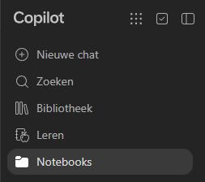
- Geef het een naam
Bijvoorbeeld Starthulp Chemie. Klik op Volgende.
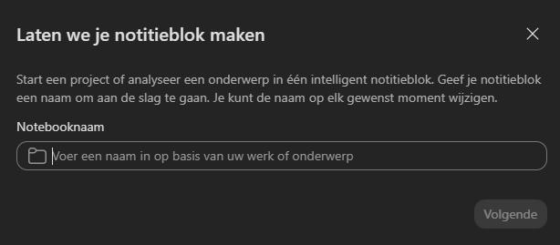
- Upload je bestanden
Klik op het pijltje omhoog. Kies de drie documenten en instructie starthulp.
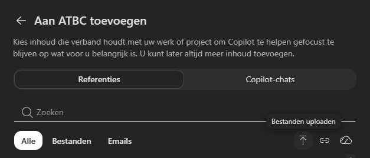


De documenten
- Inschrijvingsreglement 2026-2027 ATBCPDF
- Webpagina Praktische info ChemiePDF
- Webpagina Dit is je studie ChemiePDF
Na vijf minuten vast?
Schrijf zelf eerst. Zit je na vijf minuten vast, gebruik dan deze startinstructie. Vergelijk hem straks met je eigen versie: wat heb jij dat hier niet in staat, en andersom?
Je helpt nieuwe studenten die net met de opleiding Chemie aan de HAN starten. Wat je doet: je beantwoordt hun vragen over aanmelden, de start van het studiejaar en hoe de opleiding in elkaar zit, zoals een ervaren ouderejaars dat zou doen. Waarmee: gebruik alleen de andere documenten in dit notebook. Hoe ziet je antwoord eruit: kort, in gewone taal. Eerst het antwoord, dan in welk document en welk hoofdstuk het staat. Staat het er niet in: zeg dat eerlijk en verwijs naar de docent. Verzin niets. Bevestig in één zin dat je klaar bent. Wacht dan op de eerste vraag.
Lukt een notebook niet? Open een gewone chat en plak je instructie als eerste bericht. Lukt uploaden niet? Kopieer de tekst van de twee webpagina's en plak die erbij.
Reader3.5
Andere tools
Werk je in ChatGPT, Claude of Gemini? Daar heet het een project of een notebook, met een eigen vak voor je instructie. Je hoeft je instructie dus niet als Word-document toe te voegen.
ChatGPT
- Maak een project
Klik links in het menu bij Projecten op nieuw project en geef het een naam.
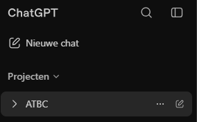
- Zet je instructie bij Aanwijzingen
Open de instellingen van het project en plak je instructie in het veld Aanwijzingen.
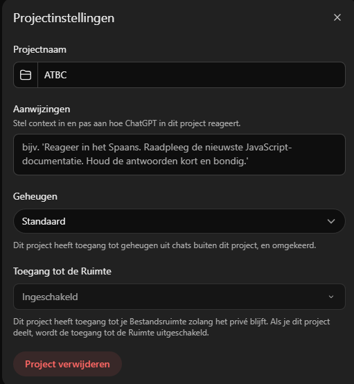
- Voeg je bestanden toe
Zet de drie documenten in het project.


Tip: staat bij Geheugen de keuze voor alleen dit project? Zet hem daarop. Anders kunnen herinneringen uit andere chats meesturen.
Claude
- Maak een project
Klik links op Projecten en daarna op Project aanmaken.
- Zet je instructie bij Instructies
Plak je instructie in het vak Instructies van het project.
- Voeg je documenten toe bij Context
Zet de drie documenten bij Context.
Voor Claude zijn er nog geen screenshots.
Gemini
Let op: Gemini staat in het Engels.
- Maak een notebook
Klik links onder Notebooks op New notebook.
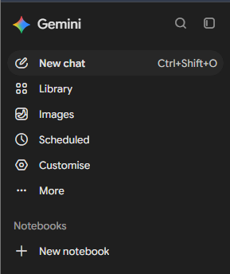
- Zet je instructie bij Instructions
Open Notebook settings en plak je instructie onder Instructions. Klik op Save.
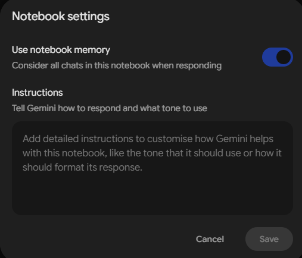
- Voeg je bestanden toe bij Sources
Klik bij Sources op Upload files en kies de drie documenten.
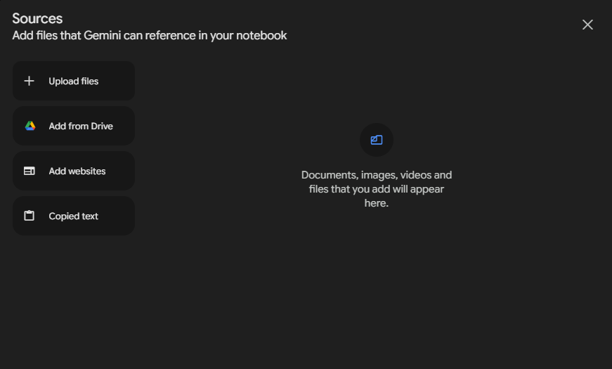


Lukt het niet binnen vijf minuten? Stap over op Copilot.
Ronde 2: beter maken
Tot 14:17. Pak er een roze post-it van een collega bij.
Reader4.1
Rondje na rondje beter
01
Vraag
Stel een vraag.
02
Check
Zoek het op. Klopt het? Wijs de plek aan.
03
Pas aan
Eén ding in je instructie of je documenten.
04
Opnieuw
Stel dezelfde vraag nog een keer.
Eén ding tegelijk, anders weet je niet wat werkte. En klopt telt alleen als je de plek kunt aanwijzen.
Net bezig?
Twee vragen die erin staan, één die er niet in staat.
Al verder?
Lastige vragen, twee documenten die iets anders zeggen, of je uitdaging.
Testvragen om mee te starten
- Wat moet ik regelen voor het lab?
- Hoeveel studiepunten heb ik nodig voor een positief studieadvies?
- Mag ik me na uitschrijving opnieuw inschrijven?
- Wat kost een labjas?
Aanpassen in Copilot: haal de oude versie van je instructie uit het notebook, zet de nieuwe erin en stel dezelfde vraag opnieuw.
Snel klaar? Drie dingen om te proberen
- Vergelijk
Leg je eigen instructie naast de startinstructie bij 3.4. Wat heb jij dat daar niet in staat, en andersom?
- Twee bronnen die botsen
Zet ook de mail aan nieuwe studenten uit 2023 erbij en vraag: wanneer zijn de introdagen? Welke klopt, en hoe weet je dat?
- Een voorbeeld
Geef je starthulp één voorbeeld van een goed antwoord.
4.2
Zelfde documenten, tien stappen verder
Voor wie al zelf bouwt. De rest bouwt een starthulp voor een nieuwe student. Wat maak jij van de drie documenten?
Jij kiest
Een website, een app, flitskaarten, een quiz, een presentatie, een animatie.
Eigen tool
Werk waarin je wilt. Geen studentgegevens.
Na de pauze laat je het zien
Twee minuten: wat maakte je, waarmee, en waar liep je vast. Half af mag. Dat is ook een verhaal.
Inspiratie
Wat kan er nog meer? De bouwers laten zien wat ze van dezelfde documenten maakten, en een collega laat zien wat hij of zij al bouwt voor het eigen werk.
5.1
Breng de AI naar je informatie
Zo gaat het nu
Jij brengt je informatie naar de AI
- Zoeken
- →
- Openen
- →
- Kopiëren
- →
- Plakken
En bij elke vraag opnieuw.
Omgedraaid
Je brengt de AI naar je informatie
- Jij wijst aan
- →
- AI leest zelf
Zoals je net deed in je notebook.
Wat de AI leest, gaat naar de server van de aanbieder. Wijs dus alleen documenten aan zonder studentgegevens.
Ronde 3: je eigen werk
6.1
Jij bent de manager van je taken
- Wat doe je van begin tot eind?
- Welk stuk geef je aan AI?
- Hoe controleer jij wat eruit komt?
Post-it
Schrijf je taak op een post-it en plak hem op de muur. Zie je dezelfde taak? Ga naast die collega zitten.
Weet je niet hoe je je taak moet uitleggen? Gebruik de prompt bij 3.1: de AI stelt jou eerst drie vragen.
6.2
Maak het voor je eigen werk
- Nieuw notebook
Voor je eigen taak, met een eigen naam.
- Schrijf je instructie
Dezelfde vijf vragen, nu voor jouw taak. Begin met een kopie van je starthulp.
- Eén eigen document
Bijvoorbeeld een handleiding of beoordelingscriteria. Geen document? Zet de kennis in je instructie.
- Test in rondjes
Vraag, check, pas aan, opnieuw.
Eén vraag met een antwoord waar je iets mee kunt.
Afsluiten
7.1
Na vandaag
Deze reader blijft staan, met alles van vandaag. Je notebook ook: open het in je tool en ga verder waar je was.
De slides van vanmiddag: download als pdf.
Vragen? Mail guus.witjes@han.nl.
Reader7.2
Mijn volgende stap
Wat maak ik af? Met welke collega? Wanneer?
Een datum, niet "binnenkort". Vul het kaartje in, kopieer het naar je mail of zet het meteen in je agenda.